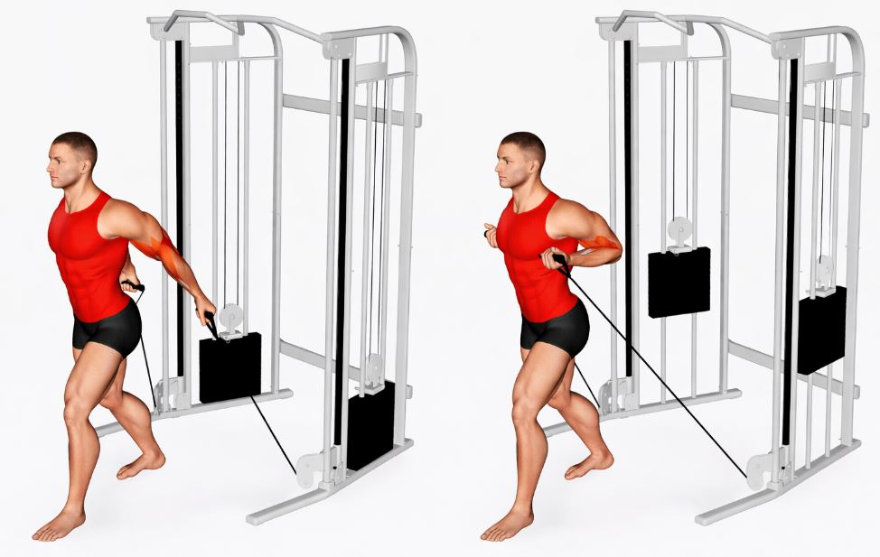

OEFENING 1
Lat Pulldown
Trekoefening aan de kabel, met normale grip, gericht op de brede rugspier.
- Stang trekken richting bovenborst, niet richting nek
- Schouders naar beneden houden, niet optrekken
- Rustig laten terugkomen, arm volledig strekken bovenaan

OEFENING 2
Wilde Grip Lat Pulldown
Zelfde beweging als de gewone lat pulldown, maar met een brede grip voor meer nadruk op de breedte van de rug.
- Handen breder dan schouderbreedte op de stang
- Borst iets naar voren, lichte holle rug
- Trek met de ellebogen, niet enkel met de handen

OEFENING 3
Rows
Roeibeweging, met stang, dumbbells of aan de kabel, voor de dikte van de rug.
- Rug recht houden, niet ronden
- Ellebogen dicht bij het lichaam trekken
- Knijp de schouderbladen samen op het einde van de beweging

OEFENING 4
Bayesian Curls
Bicepscurl aan de kabel, met de arm achter het lichaam, voor extra rek op de biceps.
- Begin met de arm iets naar achteren gestrekt
- Elleboog blijft op dezelfde plaats tijdens de beweging
- Volledig doorstrekken onderaan, voor de rek

OEFENING 5
Hammer Curls
Bicepscurl met dumbbells in een neutrale grip, handpalmen naar elkaar toe.
- Ellebogen blijven tegen het lichaam
- Geen zwaai met de romp om de dumbbells omhoog te krijgen
- Gecontroleerd naar beneden

OEFENING 6
Preacher Curls
Bicepscurl op de preacher bank, waarbij de bovenarm ondersteund wordt.
- Bovenarm blijft plat tegen de bank
- Niet volledig doorstrekken onderaan, om de elleboog te ontzien
- Traag en gecontroleerd, geen momentum

OEFENING 7
Wrist Curls
Onderarmoefening waarbij je enkel de pols buigt, met een stang of dumbbells, voor grip en onderarmen.
- Onderarmen laten rusten op de knieën of een bank
- Beweging komt enkel uit de pols
- Kleine, trage herhalingen, volledig bereik

OEFENING 8
Reverse Curls
Curl met de handpalmen naar beneden gericht, voor de onderarmen en bovenkant van de biceps.
- Grip stevig, duimen boven op de stang
- Ellebogen blijven tegen het lichaam
- Licht gewicht gebruiken, techniek boven zwaarte